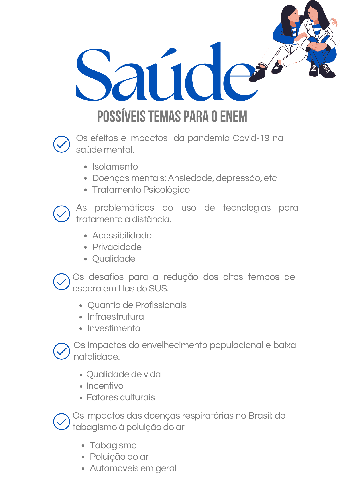

Saúde

1) Argumento de autoridade
De acordo com o profissional da saúde Paulo Pego Fernandes, em entrevista ao G1, o tempo médio de espera para um transplante de órgão no Brasil pode variar de 3 a 12 meses, o que evidencia falhas logísticas e estruturais no funcionamento do Sistema Único de Saúde (SUS). Essa informação reforça a urgência de reformulações no sistema.
De acordo com o profissional da saúde Paulo Pego Fernandes, em entrevista ao G1, o tempo médio de espera para um transplante de órgão no Brasil pode variar de 3 a 12 meses, o que evidencia falhas logísticas e estruturais no funcionamento do Sistema Único de Saúde (SUS). Essa informação reforça a urgência de reformulações no sistema.
2) Argumento histórico
Os atuais problemas estruturais do SUS estão ligados a um histórico de baixos investimentos em educação e formação de profissionais de saúde, agravado por décadas de políticas populistas que priorizaram soluções imediatistas em detrimento de melhorias sistêmicas e duradouras.
Os atuais problemas estruturais do SUS estão ligados a um histórico de baixos investimentos em educação e formação de profissionais de saúde, agravado por décadas de políticas populistas que priorizaram soluções imediatistas em detrimento de melhorias sistêmicas e duradouras.
3) Argumento de exemplificação
A ineficiência do atendimento rápido no SUS ficou evidente durante a pandemia da COVID-19. A alta demanda por leitos, UTIs e respiradores fez com que profissionais de saúde tivessem que tomar decisões trágicas sobre quem receberia atendimento e quem não, revelando o colapso do sistema diante de situações críticas.
A ineficiência do atendimento rápido no SUS ficou evidente durante a pandemia da COVID-19. A alta demanda por leitos, UTIs e respiradores fez com que profissionais de saúde tivessem que tomar decisões trágicas sobre quem receberia atendimento e quem não, revelando o colapso do sistema diante de situações críticas.
4) Argumento de comparação
Quando comparado a sistemas de saúde pública de países como Noruega, Reino Unido e Países Baixos, o Brasil apresenta um dos maiores tempos de espera para procedimentos cirúrgicos e transplantes, o que evidencia desigualdades na gestão e na eficiência da saúde pública em nível internacional.
Quando comparado a sistemas de saúde pública de países como Noruega, Reino Unido e Países Baixos, o Brasil apresenta um dos maiores tempos de espera para procedimentos cirúrgicos e transplantes, o que evidencia desigualdades na gestão e na eficiência da saúde pública em nível internacional.
5) Argumento de raciocínio lógico
Se o tempo de espera para cirurgias e transplantes no SUS for reduzido, mais vidas poderiam ser salvas, principalmente entre populações de baixa renda que dependem exclusivamente do sistema público para acessar cuidados médicos essenciais. Isso demonstra como a melhoria no atendimento impactaria diretamente a saúde coletiva.
Se o tempo de espera para cirurgias e transplantes no SUS for reduzido, mais vidas poderiam ser salvas, principalmente entre populações de baixa renda que dependem exclusivamente do sistema público para acessar cuidados médicos essenciais. Isso demonstra como a melhoria no atendimento impactaria diretamente a saúde coletiva.